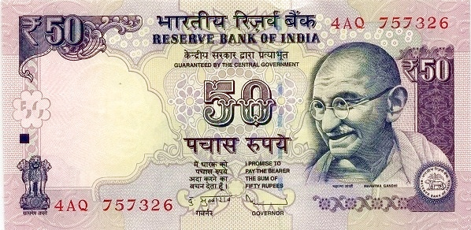
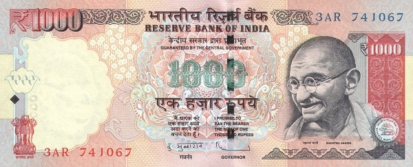

Индия - Индийская рупия
10 рупий
Лицевая сторона - портрет Махатмы Ганди
Обратная сторона - тигр, слон, носорог
20 рупий
Лицевая сторона - портрет Махатмы Ганди
Обратная сторона - пейзаж с пальмами
50 рупий

Лицевая сторона - портрет Махатмы Ганди
Обратная сторона - здание парламента Индии
100 рупий
Лицевая сторона - портрет Махатмы Ганди
Обратная сторона -горный массив Канченджанга
500 рупий
Лицевая сторона - портрет Махатмы Ганди
Обратная сторона - Махатма Ганди, ведущий людей
1000 рупий
Лицевая сторона - портрет Махатмы Ганди
Обратная сторона - сельское хозяйство, промышленность и наука Индии